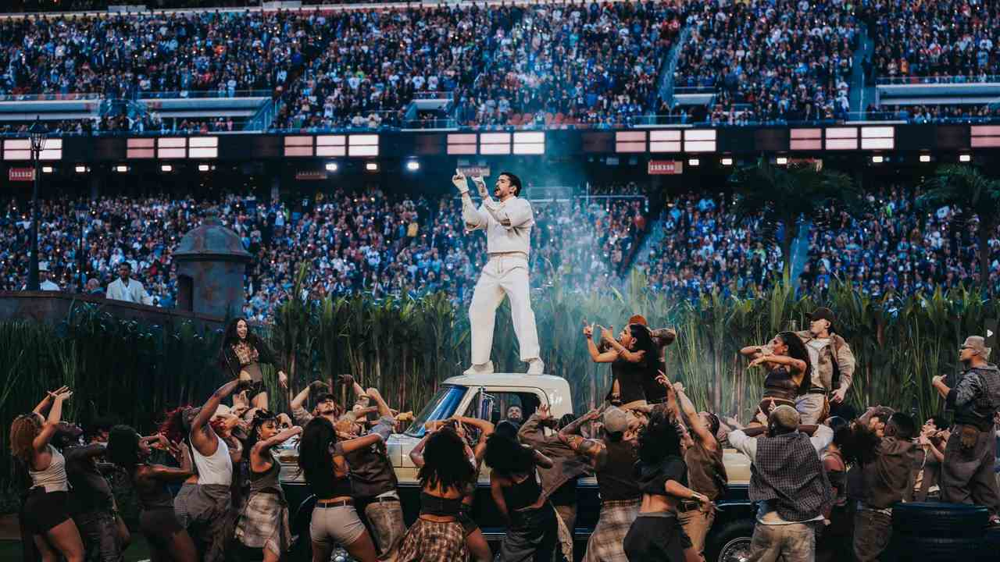
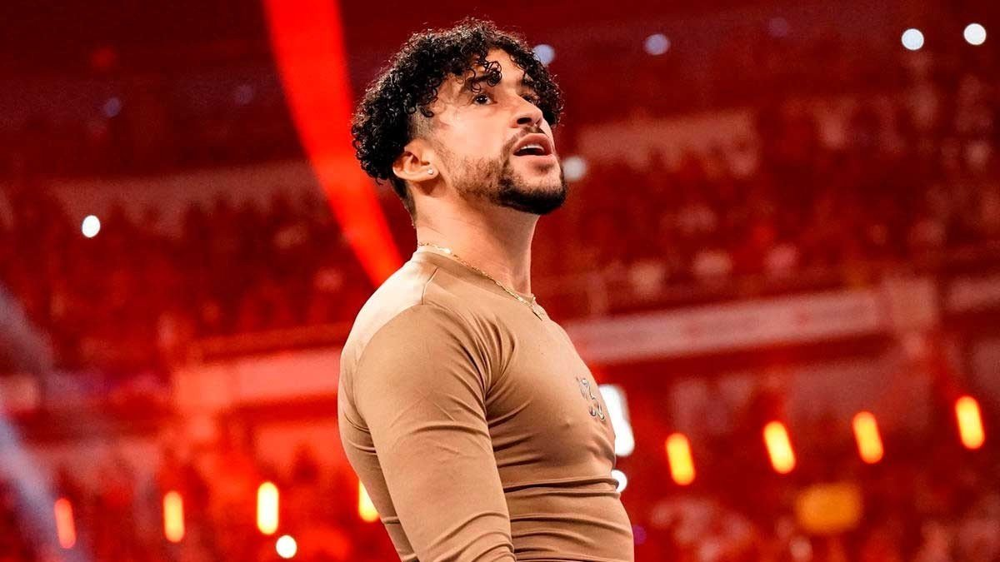

El espectáculo de medio tiempo del Super Bowl LX, celebrado el 8 de febrero de 2026 en el Levi's Stadium, representó una de las mayores hazañas culturales de la década al ser protagonizado por Bad Bunny. En una demostración de poder mediático y orgullo lingüístico, el artista puertorriqueño se convirtió en el primer headliner en la historia del evento en realizar una presentación íntegramente en español, rompiendo definitivamente las barreras idiomáticas frente a una audiencia de 124.9 millones de espectadores. La puesta en escena fue una oda visual a sus raíces caribeñas, transformando el terreno de juego en un inmenso campo de caña de azúcar que servía de lienzo para éxitos como "Tití Me Preguntó". La magnitud del show se elevó con colaboraciones estratégicas que unieron generaciones y géneros: desde la sofisticación pop de Lady Gaga hasta la energía legendaria de Ricky Martin, quien se unió para interpretar una vibrante versión de "LO QUE LE PASÓ A HAWAii" junto a los ritmos tradicionales del grupo Los Pleneros de la Cresta. Mientras los anuncios de 30 segundos alcanzaban la cifra récord de 10 millones de dólares, el impacto de Bad Bunny trascendía lo comercial, consolidando el dominio de la música latina en el escenario más prestigioso de Estados Unidos. Este hito no solo coexistió con la victoria de los Seattle Seahawks, sino que redefinió el estándar del entretenimiento global, demostrando que el ritmo y la identidad latina ya no necesitan traducción para dominar el mundo.

La incursión de Bad Bunny en la WWE no fue un simple truco publicitario, sino una de las transiciones más exitosas y respetadas de una celebridad al mundo del deporte espectáculo. Su etapa comenzó con una destacada actuación musical en el evento Royal Rumble 2021, pero rápidamente evolucionó hacia una participación física que sorprendió tanto a fanáticos como a críticos por su nivel de compromiso y habilidad técnica. Durante meses, el artista se mudó a Orlando para entrenar rigurosamente en el Performance Center de la WWE, lo que culminó en un debut icónico en WrestleMania 37, donde ejecutó maniobras de alta dificultad como el "Canadian Destroyer" . Su pasión por la lucha libre, la cual ha referenciado constantemente en sus letras, lo llevó a ganar el Campeonato 24/7 y a protagonizar una de las mejores luchas callejeras de la historia reciente contra Damian Priest en el evento Backlash 2023, celebrado en su natal Puerto Rico. Esta etapa consolidó al "Conejo Malo" no solo como un embajador global de la cultura latina, sino como una superestrella legítima del cuadrilátero que se ganó el respeto de los veteranos de la industria por su profesionalismo y autenticidad.